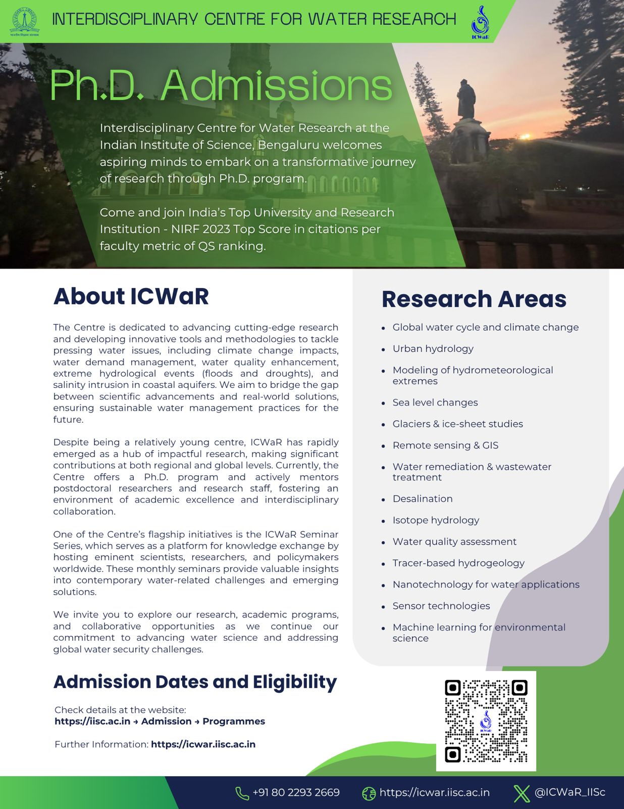
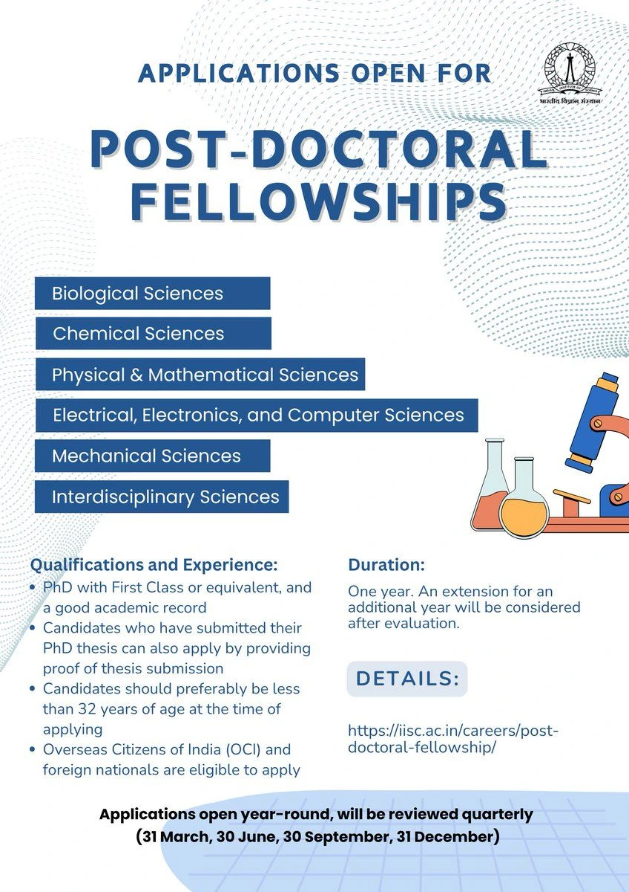

Department/Centre/Unit: Water Research (WR)
Programme: Ph.D. Interdisciplinary programme offered by Interdisciplinary Centre for Water Research.
Basic Qualification for Eligibility: BE / B Tech or equivalent degree in any branch of Engineering or M Sc or equivalent degree in Physics / Chemistry / Materials / Mathematics / Statistics / Data Science / Environmental Sciences / Geology / Hydrogeology / Atmospheric Sciences / Agricultural Sciences /Biotechnology or Graduates of 4-year Bachelor of Science programmes.
Areas of Research: Global and regional hydrological circulation, climate change impact on hydrology, Land-atmosphere interactions; Land use land cover and Terrestrial carbon cycle changes; Urban water systems; Urban hydrology/ hydrogeology; Watershed and river basin hydrology; Monsoon low-pressure systems; Natural hazards- Inland/coastal Floods, and droughts; Water management; Agrohydrology; Wetland science; Lake ecosystems; Aquatic geochemistry; Geothermal reservoir modelling; Isotope hydrology; Development of sensors: design, modeling and fabrication of water contaminant sensors, Satellite hydrology – Application of satellite technologies; Hydro geochemistry, contamination hydrology, Groundwater resources and depletion, Tracer hydrology, Water Quality Modeling, Water and wastewater treatment, Remediation of environmental and emerging contaminants.
For admission details, click here

